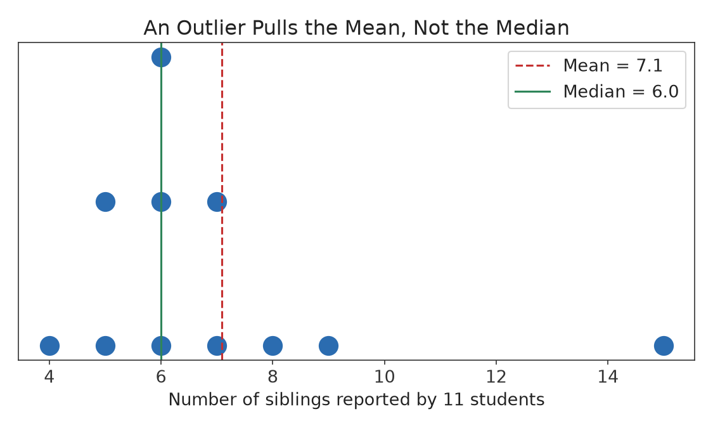
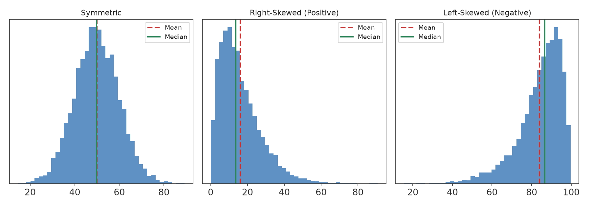

Part I · Descriptive Statistics & Exploratory Data Analysis · Chapter 3
Describing Data: Measures of Central Tendency
Once data has been collected, the first descriptive question is usually: where is the "middle" of the data — the single number that best represents a typical value? This chapter develops the three standard measures of center — the mean, median, and mode — and, just as importantly, teaches you when each one is appropriate and when it can mislead.
3.1 The Mean
Definition
The sample mean, denoted x̄ ("x-bar"), is the sum of all observations divided by the number of observations. The population mean is denoted μ ("mu").
x̄ = (Σ xi) / n = (x1 + x2 + … + xn) / n
where Σ (the Greek capital sigma) means "sum over all observations," xi is the i-th observation, and n is the sample size. The population mean μ is computed the same way, using every member of the population (size N) rather than a sample.
Example 3.1
Five students report the following number of hours of sleep last night: 6, 7, 7, 8, 22. (The "22" comes from a student who is a nurse and had just finished a 24-hour shift-adjusted survey error — more on this shortly.)
Notice that no student actually slept close to 10 hours — the mean has been pulled upward by a single unusual value.
3.2 The Median
Definition
The median is the middle value of a data set when the observations are arranged in increasing order. If n is odd, the median is the single middle observation. If n is even, the median is the average of the two middle observations.
For the sleep data above (already sorted: 6, 7, 7, 8, 22), n = 5 is odd, so the median is the 3rd value: 7 hours. This is a much more typical value for this data set than the mean of 10.0.
Example 3.2 — Even n
Six exam scores, sorted: 62, 74, 81, 85, 90, 95. With n = 6 (even), the median is the average of the 3rd and 4th values: (81 + 85) / 2 = 83.
3.3 The Mode
Definition
The mode is the value (or values) that occur most frequently in a data set. A data set can have one mode (unimodal), two modes (bimodal), more than two (multimodal), or no mode at all if every value is unique.
The mode is the only measure of center that can be used with purely categorical (nominal) data — for example, the modal blood type in a population, or the modal brand of car sold in a given month. For numerical data, the mode is most useful when a data set has a small number of repeated values, or to describe the shape of a distribution (see Section 3.5).
3.4 Outliers and Resistance
Definition
A statistic is resistant (or robust) if it is relatively unaffected by extreme values (outliers) in the data. The median and mode are resistant; the mean is not.

Figure 3.1 — A single large outlier (15 siblings, likely a data-entry artifact or a genuinely unusual household) pulls the mean noticeably to the right, while the median barely moves.
Because the mean uses every value's exact numerical distance from the center, one extreme value can shift it substantially, as seen in Example 3.1 and Figure 3.1. The median only depends on the order of the values, so an extreme value has to move past the middle position to change the median at all — its exact magnitude does not matter. This is why widely reported economic statistics like household income use the median rather than the mean: a small number of extremely high incomes would otherwise dominate the mean and make it a poor description of a "typical" household.
Common Pitfall
"The average household income is $95,000" and "half of households earn less than $95,000" are very different claims, and news reports frequently blur mean and median together. Always check which measure of center is being reported, especially for skewed data like income, home prices, or wealth.
3.5 Center and the Shape of a Distribution
The relationship between the mean and the median is a quick diagnostic for the skewness of a distribution — whether it has a longer tail on one side.

Figure 3.2 — In a symmetric distribution the mean and median coincide. In a right-skewed distribution (a long tail toward high values, such as income) the mean is pulled above the median. In a left-skewed distribution (a long tail toward low values, such as age at retirement) the mean is pulled below the median.
Shape
Relationship
Typical example
Symmetric
Mean ≈ Median
Adult heights within one sex
Right-skewed (positive skew)
Mean > Median
Household income, home prices, hospital charges
Left-skewed (negative skew)
Mean < Median
Age at death in a developed country, exam scores on an easy test
Common Pitfall
The direction of skew refers to the direction of the longer tail, not where most of the data piles up. A right-skewed distribution has most of its data on the left, with a thin tail stretching to the right.
3.6 Weighted Mean
Sometimes different observations should not count equally. The weighted mean assigns a weight wi to each value:
x̄w = (Σ wixi) / (Σ wi)
Example 3.3
A course grade is 20% homework, 30% midterm, 50% final exam. A student scores 90 on homework, 75 on the midterm, and 88 on the final:
A simple (unweighted) mean of 90, 75, and 88 would give 84.33 — close here, but the two can diverge substantially when weights are uneven.
3.7 Choosing the Right Measure of Center
Use the mean for roughly symmetric numerical data with no extreme outliers — it uses all the information in the data and has convenient mathematical properties used throughout later chapters.
Use the median for skewed numerical data or when outliers are present, or whenever you want a "typical value" that is not distorted by extremes.
Use the mode for categorical data, or to identify the most common value(s) in any data set, especially multimodal ones.
Chapter 3 Summary
The mean (x̄ or μ) is the arithmetic average; it uses every data value but is sensitive to outliers.
The median is the middle value in sorted order; it is resistant to outliers and skew.
The mode is the most frequent value; it is the only measure usable with nominal categorical data.
Comparing the mean and median diagnoses skewness: mean > median suggests right skew; mean < median suggests left skew.
A weighted mean generalizes the mean when observations contribute unequally.
Exercises
Compute the mean, median, and mode of the data set: 3, 5, 5, 6, 8, 9, 9, 9, 40.
Explain, using your answer to Exercise 1, why the mode can sometimes be a poor measure of center even when it exists.
A real-estate report says the "average" home price in a neighborhood is $612,000, but a local buyer notices most homes actually sell for around $420,000–$460,000. Explain what is likely happening, and which measure of center the buyer should ask for instead.
A small business has 9 employees earning $45,000 each and one owner earning $310,000. Compute the mean and median salary. Which one better describes what a "typical" employee earns?
Exam weights for a class are: quizzes 15%, project 25%, final exam 60%. A student scores 95 on quizzes, 80 on the project, and 70 on the final. Compute the student's weighted average grade.
Selected Solutions
Exercise 1
Sorted: 3, 5, 5, 6, 8, 9, 9, 9, 40 (n = 9). Mean = (3+5+5+6+8+9+9+9+40)/9 = 94/9 ≈ 10.44. Median = 5th value = 8. Mode = 9 (appears three times).
Exercise 3
The mean price is likely being inflated by a small number of very expensive homes (right skew), which is common in real estate. The buyer should ask for the median sale price, which is resistant to a handful of high-end outliers and better reflects what a typical home actually sells for.
Exercise 4
Mean = (9 × 45,000 + 310,000)/10 = (405,000 + 310,000)/10 = 71,500. Median (sorted, 10 values, average of 5th and 6th) = (45,000 + 45,000)/2 = 45,000. The median ($45,000) far better describes what a typical employee earns; the mean is pulled upward by the single high owner salary.